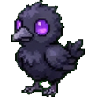

 Psychic
PsychicTap a stage to read its story.
Voxkin is a plump black raven chick with oversized purple-violet eyes that hold far too much awareness for something so young and round. Its wings are stubby and not yet flight-ready, but it compensates by hopping with great authority across any surface it occupies. In Light Grove it perches on the highest branch it can reach - not to see farther, but to hear farther - and it repeats back everything it hears in a perfect impression of the voice that spoke it. The grove children find this either delightful or deeply unsettling depending on which word was repeated.
Field note: Voxkin can reproduce any voice it has heard once with perfect pitch accuracy - it never uses its own voice for ordinary speech.
Light Grove. Voxkin and its family are found in the Light Grove. See everyone who lives there.
Share a Bond Food that matches its types to become friends. Voxkin loves:
A Bond Food is not a trick. It joins your spirit with the Kimuro's spirit, and only when it chooses you.
Print the Kimuro adventure packs: mazes, cards, a board game and Bond Mark medals.
See the printable packs